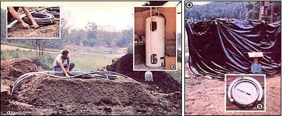

Simple DIY Water Heating with Compost. [1] MOTHER's newest compost mound shown here partially completed Is a low, rectangular heap with sloping sides (a shape that eliminates the need for a cage) and two flat coils of polyethylene tubing buried inside it. [2] The rings are connected to insulated hoses which will carry water in and out of the pile. [3] The warmed water travels 80 feet (see the diagram at left) and then is circulated through a heat exchanger inside this converted water heater. [4] MOM's second Jean Pain-style compost heater will be a hard act to follow! Supported by a wire frame and sheathed in black plastic, the circular mound maintained for almost teal months its highest temperature of 140?F, as registered on . . . [5] this thermometer.